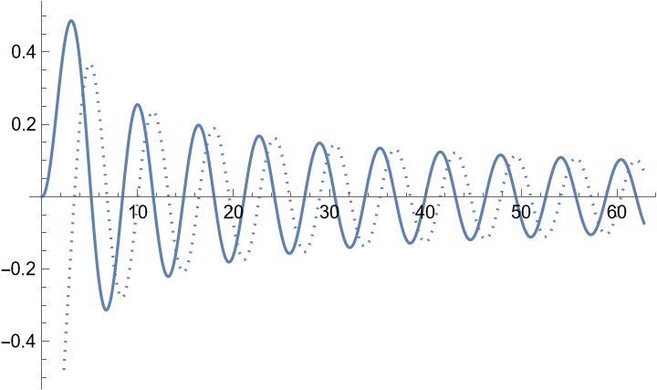
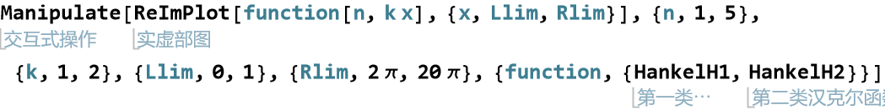
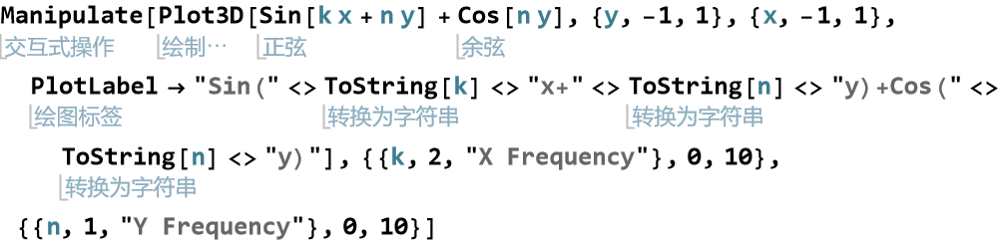
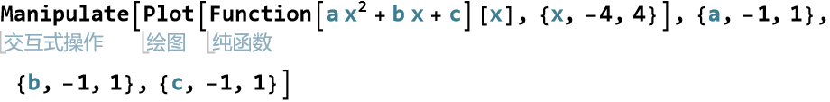
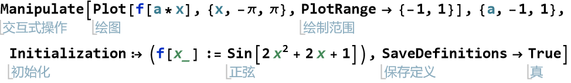

Chapter VII Creating Interactive Models
Manipulate

Manipulate needs to specify the parameters
It can be used to give a list of discrete choices

Manipulating can also create discrete parameters
The label of the parameters and the plot can be modified and updated automatically, double-click the result cell to hide code
Initial values can also be specified

Using user defined functions

Or use Initialization to define function within Manipulate
